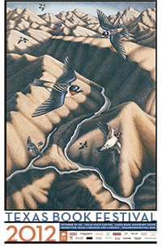

"This coffee table-friendly book is gorgeous, but the book's beauty should not detract from the author's brutal warning. River of Contrasts:The Texas Colorado is more than a beautiful coffee table book – it is also a stirring defense of the river and a call to arms."—Steve Davis, Southwestern American Literature, Fall 2012
"In addition to being a skillful writer, Crisp is a talented and accomplished artist. River of Contrasts is beautiful and inspiring and will provide a legacy for one of Texas' most important rivers."— Jim Kimmel,Texas Books in Review, Summer 2012
"The author's love of her subject is reflected in both her remarkable illustrations and her flowing prose.The author's ability to capture both the inherent futility of taming wild rivers and the utter necessity of finding a shared commitment to a proper balance among competing forces is remarkable; to do so in a way that speaks to the reader's heart is what maker her work exceptional."--Gary Pinkerton, East Texas Historical Journal, Spring 2013
AWARDS
The Texas State Historical Association
2012 Ron Tyler Award for Best Illustrated
book on Texas History and Culture
Texas Institute of Letters
2012 Carr P. Collins Award
for Best Book of Non-fiction
2012 Texas Book Festival Poster Artist

RIVER of CONTRASTS:
THE TEXAS COLORADO
Written and illustrated by Margie Crisp
Foreword by Andrew Sansom
Texas A&M University Press
River Books, sponsored by The Meadows
Center for Water and the Environment,
Texas State University
"Crisp records her journey not only through her words, but also through vivid digital photo, rich silkscreens, and exceptional linocuts and lithographs. Her magnificent artwork is rich and vibrant. With each new piece of art the reader is rewarded for turning the next page. Crisp clearly has a rare combination of gifts as an artist, writer, and naturalist, and is the official artist of the 2012 Texas Book Festival."—ToddVotteler,Aether Magazine, October 2012